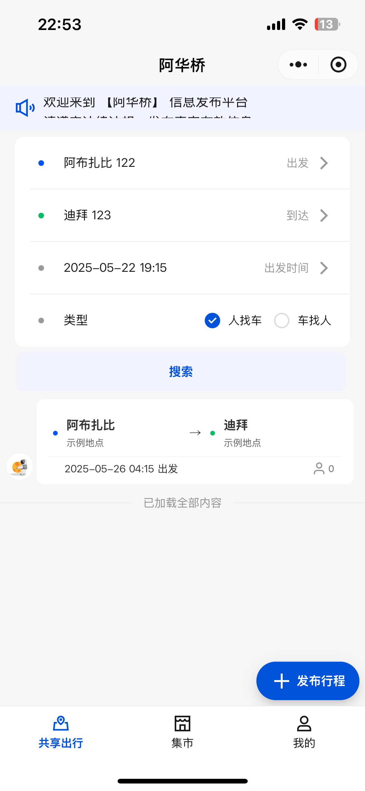
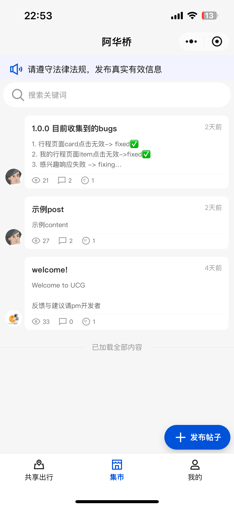
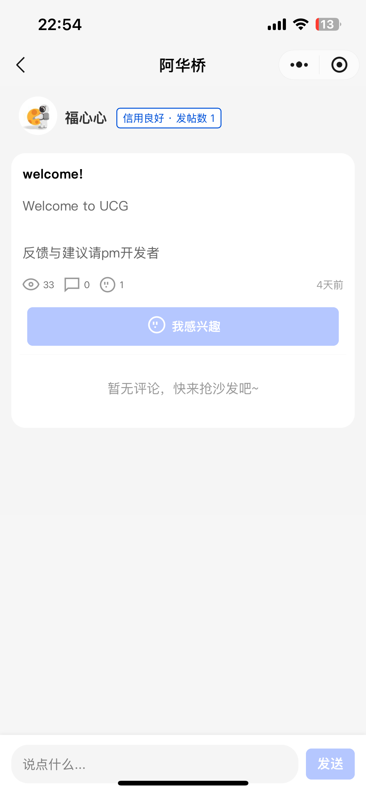
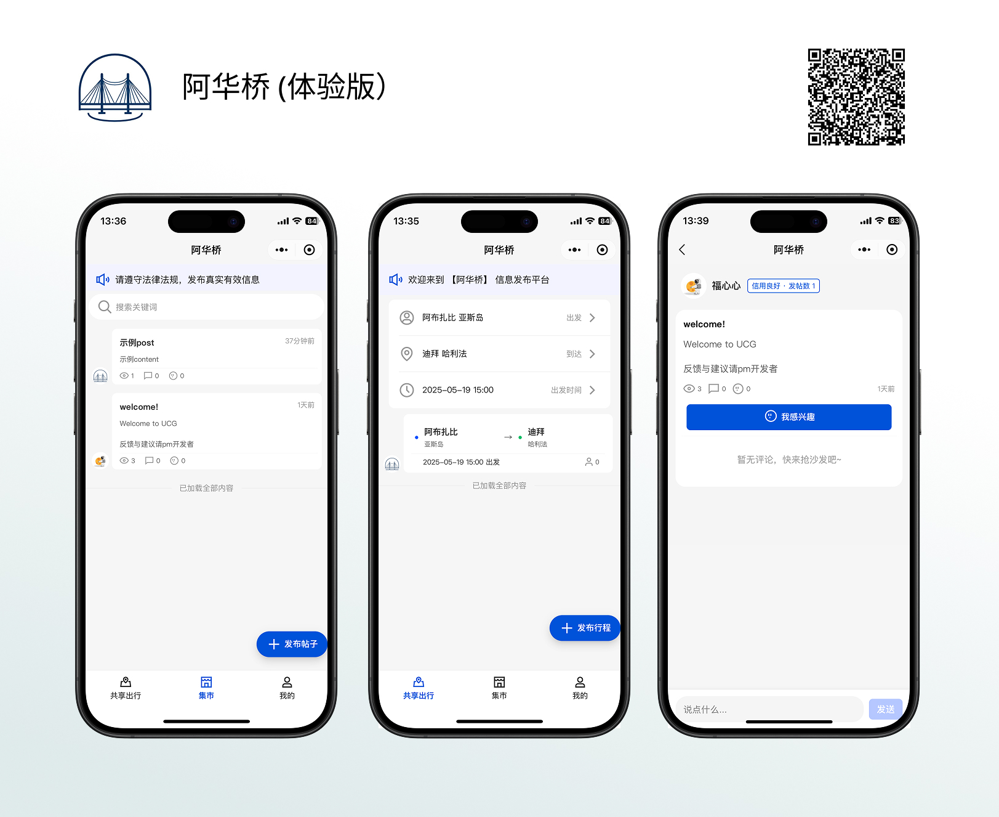

UCG微信小程序
阿联酋华人社区综合服务平台，为海外华人提供本地化服务和社区交流
测试版本
Beta
项目状态
审核中
产品形态
小程序
服务地区
阿联酋
项目概述
UCG是专为阿联酋华人社区开发的微信小程序平台，集共享出行、商家服务、活动发布、社区交流于一体的综合性平台。
项目从0到1完成完整产品开发流程，目前正在稳步运营中。
技术架构
采用微信小程序原生开发框架，结合现代前端技术栈，后端采用微服务架构。
核心功能
📅 活动发布
💬 社区论坛
📰 资讯推送
🔍 便民查询
应用界面展示

共享出行 - 本地出行互助

论坛 - 社区论坛

论坛 - 社区论坛内容
产品宣传海报

项目亮点
用户导向
深入用户调研，功能设计贴合实际需求
本地化
针对阿联酋当地环境定制
全栈开发
独立完成产品设计到技术实现
商业运营
建立可持续的商业模式